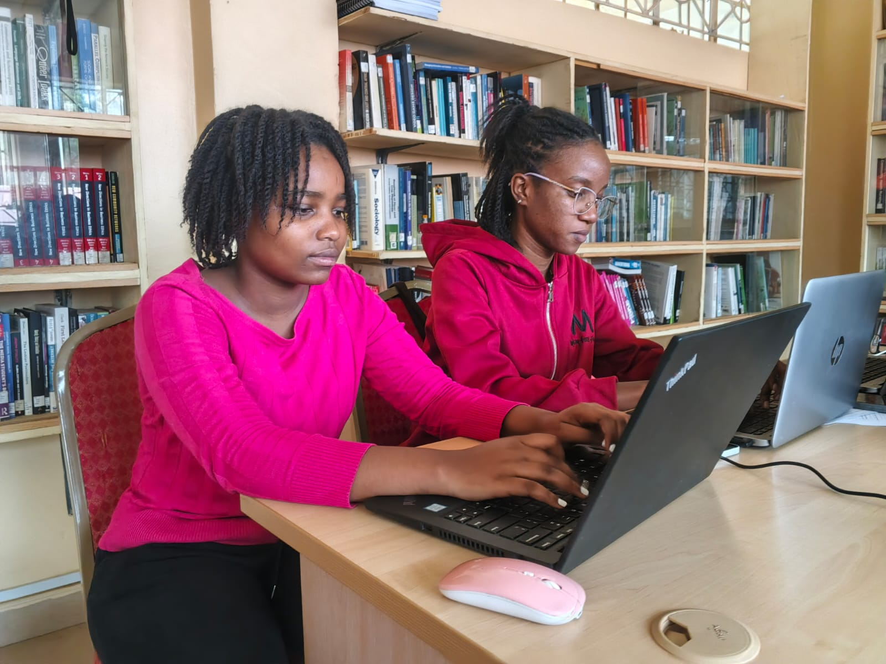

A comprehensive platform designed to track, assess, and manage postgraduate student progress with seamless collaboration between students, supervisors, and administrators.

Everything you need to manage postgraduate assessments and track student progress efficiently across your institution.
"This platform transformed how I track my research progress. The feedback system is intuitive and keeps me aligned with my supervisor at every stage."
"Managing multiple students has never been easier. I can provide timely feedback and monitor everyone's progress from a single, clean dashboard."
"The ERP Finance integration alone saved our department hundreds of hours. No more queues, no lost paperwork — everything is tracked digitally."